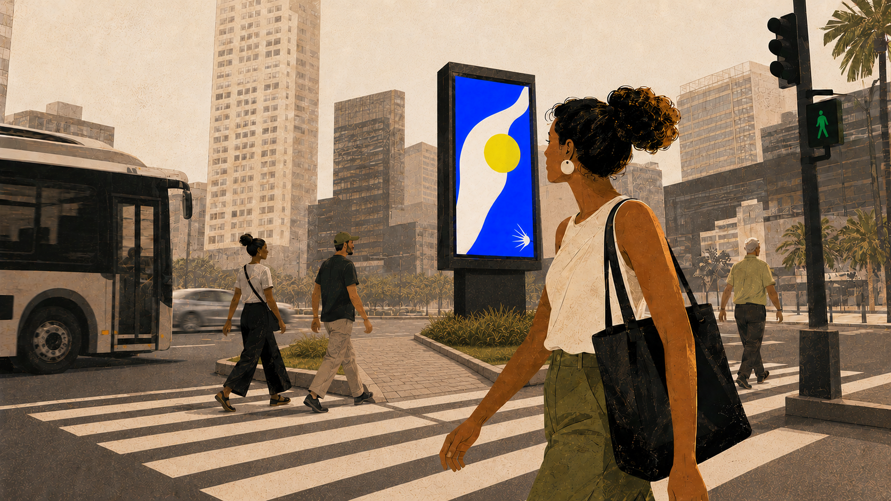
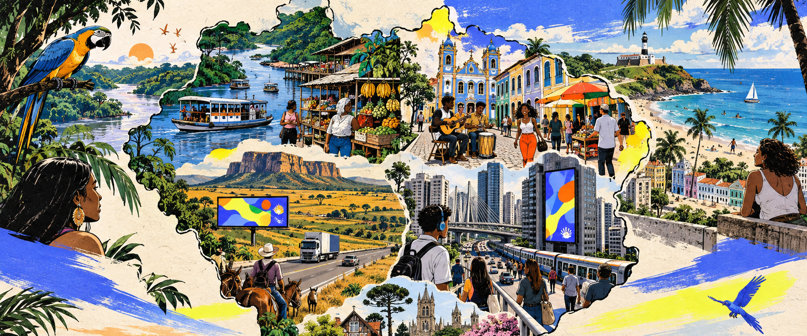
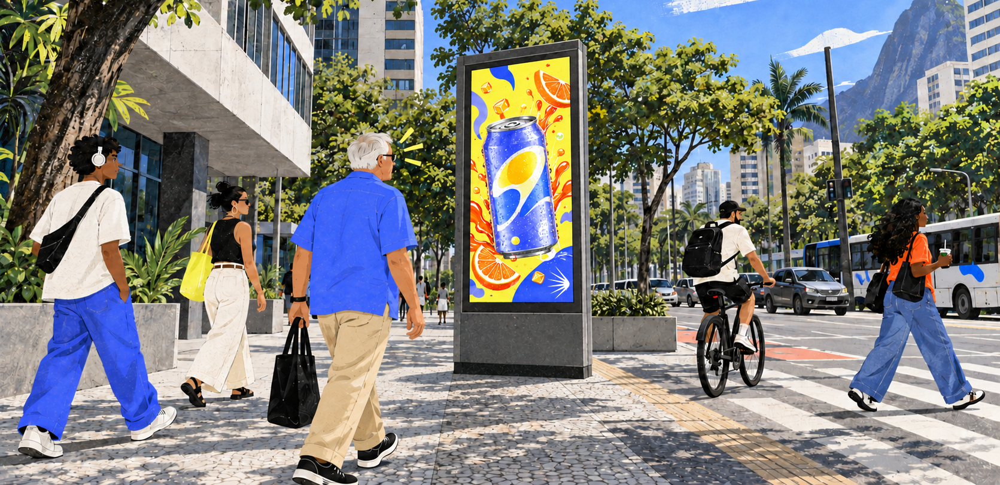
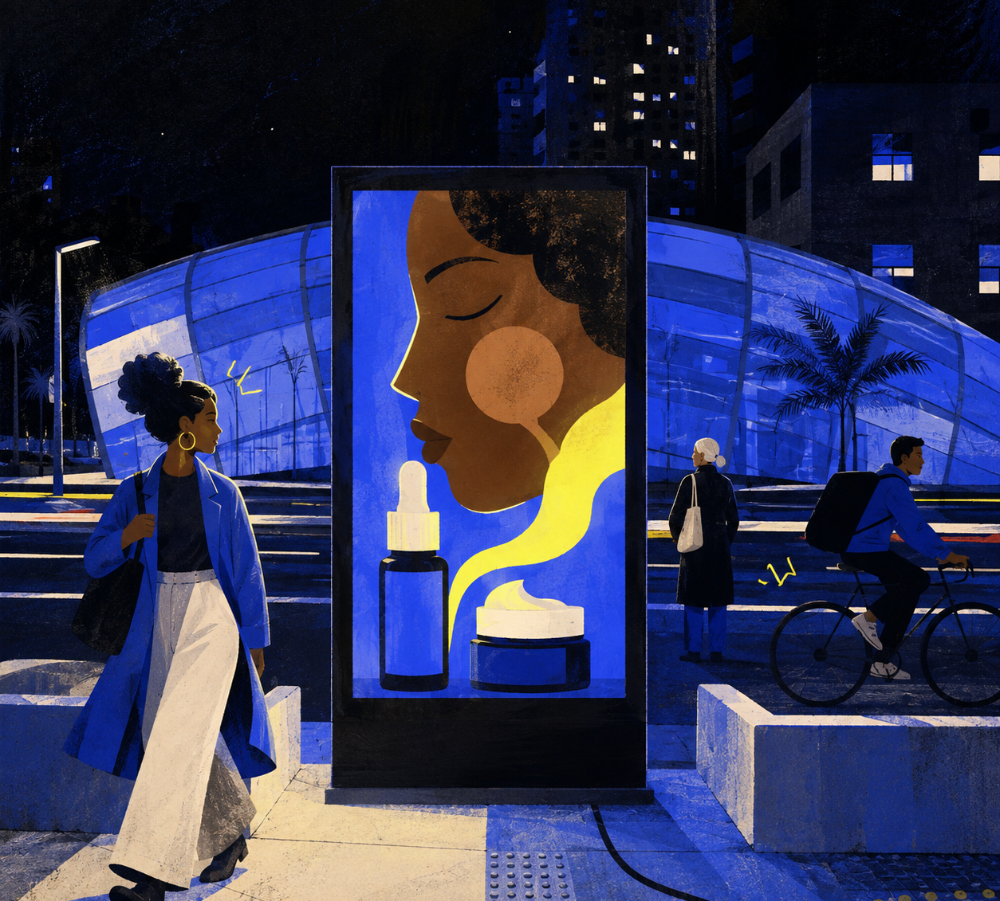

Não nascemos para
ocupar um espaço no OOH
mas para redefinir o valor
dele

O mercado aprendeu a disputar atenção na superfície. formatos, impacto, frequência, cobertura.
Mas a cidade não funciona assim. ela carrega uma lógica invisível e humana.
Fluxos, ritmos, comportamentos, tensão, tempo.
Ninguém atravessa a cidade da mesma forma, ninguém percebe o espaço da mesma maneira.
E nenhuma mensagem deveria existir, sem carregar o contexto da sua raíz.
A Roohts nasce para transformar percepção em inteligência, aplicada ao comportamento humano
e ao ritmo das cidades, pra criar experiências que façam sentido no caminho.
É profundidade para entender. sensibilidade para conectar. e método para cocriar.
PORQUE TUDO O QUE CRIA CONEXÃO DE VERDADE PULSA POR DEBAIXO DO CONCRETO.
Somos rebeldes
com causa
Nossa rebeldia é orientada por método, não só
por provocação. Questionamos o óbvio para
revelar todo o potencial do OOH. Aprofundamos
a análise e transformamos conhecimento em
direção estratégica. Valorizamos rigor, clareza e
pensamento crítico. Preferimos evidências a
opiniões e lógica a achismos. Somos diretos ao
defender aquilo em que acreditamos, mas
sempre com respeito.
Nossa rebeldia é orientada por método, não só por
provocação. Questionamos o óbvio para revelar
todo o potencial do OOH. Aprofundamos a análise
e transformamos conhecimento em direção estratégica.
Valorizamos rigor, clareza e pensamento crítico.
Preferimos evidências a opiniões e lógica a achismos.
Somos diretos ao defender aquilo em que acreditamos,
mas sempre com respeito.
Rebeldes na forma de pensar.
Consistentes na forma de fazer.
Traduzimos a complexidade do OOH em vantagem competitiva, conectando
inteligência, criatividade e execução precisa para gerar campanhas mais
relevantes para o negócio das marcas.
Dados são lei
Milhares de fontes formam uma camada anterior às decisões. É no Roohts OS, nosso sistema operacional e data lake, que informações isoladas passam a se conectar e orientar o caminho.
Uma nova forma de pensar o OOH, não apenas pela visibilidade, mas pela
comprovação. Abandonamos o achismo para que os dados orientem a estratégia,
a tecnologia qualifique a presença, a criatividade garanta autenticidade e a
ciência prove, de fato, o impacto real no ponteiro do seu negócio.
E TECNOLOGIA
Uma cidade.
Múltiplas camadas
O que parece uma única paisagem é, na verdade, um sistema vivo de relações.
Mercado
Movimentos, tensões e oportunidades que alteram o papel
da comunicação.
Pessoas
Comportamentos, repertórios e estados de atenção que mudam ao longo
do dia.
Jornada
Fluxos, ritmos, permanências e encontros que organizam a experiência
urbana.
Contexto
Lugar, luz, distância, velocidade e cultura que dão significado
à mensagem.
Entender o comportamento das pessoas faz o OOH deixar de ser paisagem
urbana e gerar resultados de negócio.
Jornada com
borda infinita
Do grande eixo à cidade do interior, a mídia ganha precisão quando entende a granularidade de cada território. Cruzamos cobertura, comportamento e contexto para alcançar a diversidade de públicos do Brasil com relevância local.

Partimos da jornada e da qualificação da audiência para construir uma
arquitetura de mídia mais precisa, que reduz desperdícios e potencializa
os resultados de cada projeto.
Uma campanha.
Múltiplos contextos
Da integração entre Dados, Estratégia e Mídia nasce uma criação mais eficaz e autêntica. Com a Roohts UX, nossa metodologia proprietária, unimos design, neurociência e experiência do usuário para criar campanhas que se integram à jornada das pessoas fortalecendo a presença e reputação das marcas.

Quando a criação estabelece critérios claros de design e considera a experiência
das pessoas, as ideias ganham mais força e se transformam em campanhas
mais relevantes.
Analisamos mais
de 100 variáveis
antes de criar
o primeiro layout.
Campanhas mais
eficazes e autênticas
Um fluxo mais claro, mais ágil e mais estratégico para transformar insights em ação.

POWERED
BY DREAMERS.
EMPOWERING
THE ECOSYSTEM.
O Grupo Dreamers é o maior ecossistema independente de comunicação e entretenimento do Brasil. Reúne empresas especialistas e competências complementares, transformando desafios de negócio em soluções integradas e vantagens competitivas para seus clientes.
É dessa potência que nasce a ROOHTS.